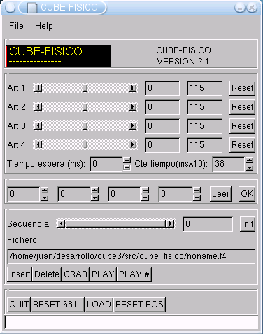

| CUBE RELOADED: CONTROL I |
Se ha creado la versión 2.1 del programa cube-físico. Tiene la misma funcionalidad que la versión 2.0, sin embargo ahora se conecta con el Stargate servos8, que puede estar implementado en diferentes microcontroladores y no solo en un 6811.

está programado en C, bajo Linux, usando las librerías GTK 1.2. Para más información sobre su funcionamiento y las cosas que se pueden hacer con él, consultar aquí.
Las ventajas que se consiguen con esta nueva versión son: